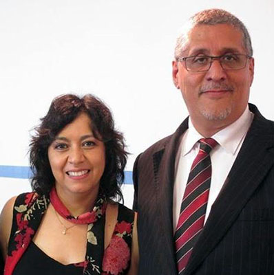

Comenzaron a trabajar como misioneros de corto plazo en diversas etnias mexicanas como los Tarahumaras en la sierra de Chihuahua y los Totonacas en Veracruz. También hicieron varios viajes misioneros de corto plazo a España y al norte de Marruecos.
Su trabajo como Misioneros de tiempo completo comenzó en Bélgica en 1999, desde su llegada a Bruselas comenzaron el trabajo evangelístico con la población de la ciudad que es en un 60% de origen extranjero.
Al inicio de la obra ellos trabajaron en los campos de refugiados evangelizando a las personas. Después de un año abrieron un café cristiano llamado Le Phare (El Faro) y ahí vieron pasar a más de 40,000 personas en el transcurso de 4 años. Muchos se convirtieron al Señor y otros no, pero todos oyeron el evangelio de salvación. Dios sano a personas de cáncer y diversas enfermedades en ese café. Los iraníes llegaban diciendo que habían tenido sueños y visiones y poco a poco comenzaron un grupo de iraníes de 38 personas en su casa. Fue un tiempo poderoso, asombroso y de gran gozo. Además, se convirtieron al Señor muchos de las repúblicas exsoviéticas y de origen africano además de muchísimos filipinos. Debido a esto y por los problemas de idiomas Mauricio y Lulú acabaron pastoreando 4 congregaciones al mismo tiempo en 3 diferentes idiomas. Esto genero la necesidad de fundar la Escuela Bíblica Logos donde entrenaban líderes para esas nuevas congregaciones; Logos el día de hoy trabaja con 20 a 30 estudiantes y tiene alumnos aun en línea y otorga la Licenciatura en Teología.
Como resultado de esto se fundaron varias congregaciones en diferentes idiomas y se han entrenado a decenas de líderes para en ministerio.
El día de hoy y después de 17 años de trabajo en Bélgica, Dios ha dirigido a Mauricio y a Lulu a comenzar algo totalmente nuevo, pero ahora en la ciudad de Paris en Francia. Los misiólogos describen a Paris como una ciudad cosmopolita, multicultural, multiétnica, multiligüística y multireligiosa, pero especialmente laica, liberal y con tendencia al misticismo, sin embargo, retiene en esencia una forma de catolicismo romano liberal también. Esta ciudad es llamada popularmente la Ciudad de las Luces, aunque en realidad sabemos que está en tinieblas y que solo el 1% de los franceses se considera nacido de nuevo y hay un alto grado de ecumenismo en la sociedad francesa.
Dios nos está abriendo puertas para comenzar una galería de arte cristiano moderno en Paris. El mensaje central de cada pieza debe de ser Jesús y debe poder ser usada para evangelismo directamente como el medio para hablar de Jesús a las personas que visiten esa galería. Si algo tiene Paris es que aman las artes, así que usaremos la pintura, la escultura, la alfarería, la música, la literatura y toda clase de medios artísticos para atraer la atención de los parisinos y usar esa oportunidad para hablarles de Jesús. Se invitarán a artistas cristianos en todas estas diferentes disciplinas del arte expondrán en el escaparate una obra que estén creando en ese mismo momento y después los espectadores serán invitados a una cita para café y para conocer y hablar con el artista. Se esperan ver buenos resultados de esto.
También habrá en esa galería un mini-espacio reservado para conferencias y café, donde pretendemos abordar todos los temas posibles e invitar a la gente a venir a escuchar acompañados de una taza de buen café francés. “Café con Propósito”. La galería se llamará “La Maison du Potier” La casa del Alfarero y la mini-sala de conferencias “La Chambre du Maitre” El cuarto del maestro. Estamos seguros que Dios nos enviará artistas y personas para lograr hacer discípulos y al final fundar una iglesia.
La visión del ministerio de Mauricio y Lulú Salazar se resume en esta máxima: “Llevando la Luz de Jesús a la ciudad de las luces”.
Mauricio estudió una Licenciatura Teología en Covenant Life University y también un Diplomado en Misiones Internacionales en el Center for International Christian Ministries de Londres Inglaterra.
Su esposa Lourdes Romero es Licenciada en Psicología egresada de la Universidad Iberoamericana y ostenta una Maestría en Teología en Covenant Life University.
Tanto Mauricio como Lulú son poliglotas y hablan español, inglés, francés y neerlandés.
Sus hijos Betsabé (23 años) y Obed (21 años) estudian actualmente en Southwestern Christian University las carreras de Comunicación Intra-cultural y Música respectivamente.
No hay nada más importante en las misiones mundiales que la oración y la intercesión por los misioneros, ore por Mauricio y Lulú Salazar y la nueva obra en Paris, Francia.
Escríbenos a la siguiente dirección de correo:
pastormau@gmail.com
Vinculo de oración por Francia y el mundo:
http://www.operationworld.org/fran